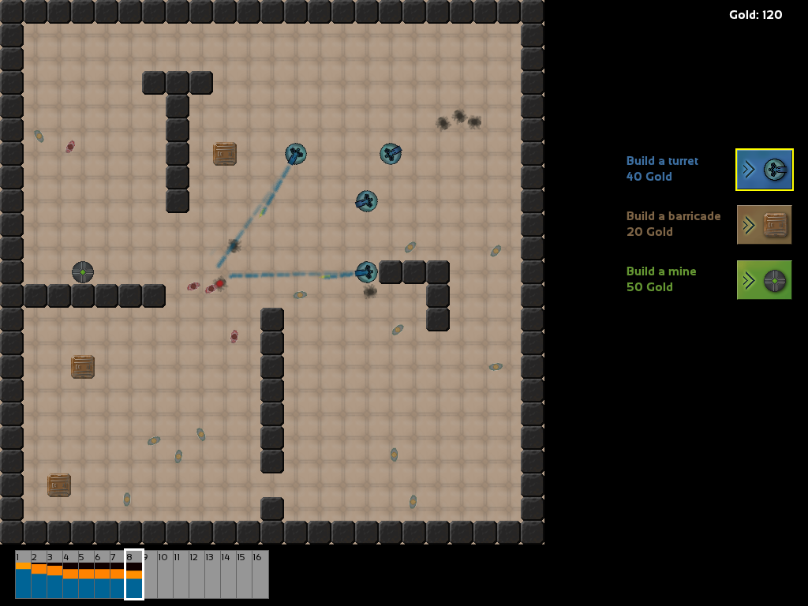

A Temporary Outbreak
This game was a collaboration with eXpl0it3r for the SFML Game Jam, developed during a weekend. The theme of the jam was time travel.
It's you against a world doomed by zombies (as usual). However, time is on your side. Build turrets, barricades and mines to defend the citizens from the zombies. Undo mistakes by travelling to the past, or foresee the outcome by observing the future.
The game's goal is to prevent your citizens from being infected. The game progresses at a fast pace, but you have the opportunity to jump to the past and meet different decisions. Doing so costs resources, which you earn over time, so your means of altering history are limited. While the game is playable and full of action, it could definitely need some balancing and other improvements :)

The bar at the bottom is the timeline, giving you an overview of how the population is decimated over time. Blue are citizens, orange/red zombies, black the dead. The present is emphasized with a white marker, to the left of it you can see the past. When you hover over a time slot, the price to travel there appears in the right-upper corner. Futureward jumps are free, but you risk missing opportunities.